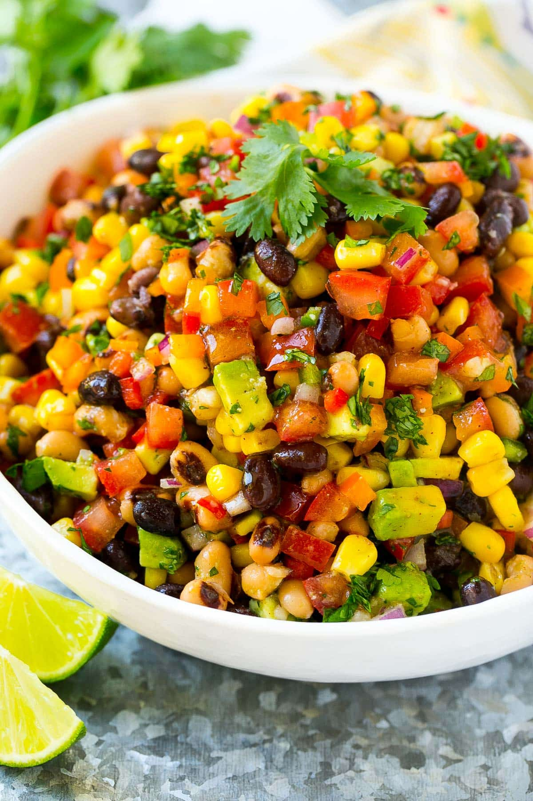

Cowboy Caviar

Description
A fresh, simple dip that can be thrown together in under 15 minutes!
This Cowboy Caviar makes a great side dish for any picnic, potluck,
or party, and is a great way to use up your summer produce!
Recipe
Ingredients
- 3 diced Roma tomatoes w seeds removed
- 2 ripe diced avocados
- 1/3 cup red onion
- 15 oz black beans rinsed and drained
- 15 oz black eyed peas rinsed and drained
- 1 can sweet corn rinsed and drained
- 1 diced capsicum
- 1/3 cup finely chopped coriander
- tortilla chips for serving
Dressing
- 1/3 cup olive oil
- 2 small limes juiced
- 2 tbsp red wine vinegar
- 1 tsp sugar
- 1/2 tsp salt
- 1/2 tsp pepper
- 1/4 tsp garlic powder
Steps
- Combine tomatoes, avocado, onion, black beans, black eyed
peas, corn, pepper, jalapeno pepper, and cilantro in a large
bowl. Toss/stir well so that ingredients are well-combined.
- In a separate bowl, whisk together olive oil, lime juice,
red wine vinegar, sugar, salt, pepper, and garlic powder.
- Pour dressing over other ingredients and stir/toss very well.
- Keep refrigerated. If not serving immediately, be sure to
toss/stir well before serving.